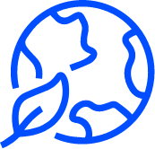

Goutte à goutte, sauvons notre planète
Et quoniam inedia gravi adflictabantur, locum petivere Paleas nomine, vergentem in mare, valido muro

Un organisme capable
de vous guider
Ratio vous aide à rester vis-à-vis de la loi tout en restituant vos bulletins de paie et les états déclaratifs à temps.
Une gestion de la paie
centralisée
Avec notre outil accessible partout et par tous, nous vous offrons une gestion de paie simple et efficace.

Un gestionnaire de paie dédié
Un gestionnaire de paie dédié
pour chaque entreprise
Notre équipe est toujours disponible pour vous aider au quotidien.